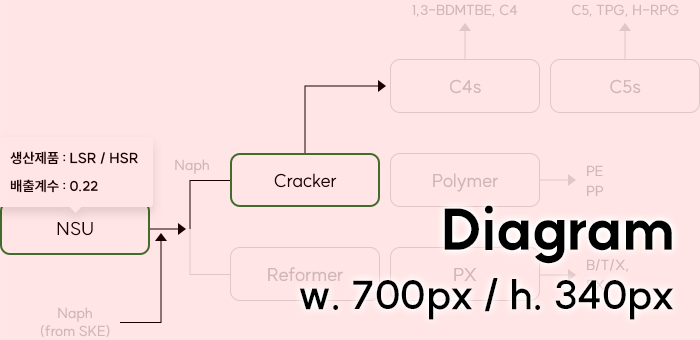

SK 이노베이션
LCA Infra
Monitoring
SKI_김선경
님
오늘도 좋은하루 되세요!
평가
평가 항목을 입력해주세요.
Step 1
평가 시점 연도를 선택하세요.
시점
Baseline
Baseline
Baseline
현재
현재
단기
2025
중기
2030
장기
2040
2050
Step 2
사업회사를 선택하세요.
사업회사
SK에너지
SK에너지
SK지오센트릭
SK루브리컨즈
SK인천석유화학
Step 3
평가 방법을 선택하세요.
평가 방법
통합 평가: CLX 연계 / R&S
통합 평가: CLX 연계
R&S
GC
L
개별 평가: 사업장 단독
Step 4
Business Model을 선택하세요.
Business Model
Petchem III (Crude + Bio)
Step 1
SKE BM 선택
Base
Step 1
SKE BM 선택
Petchem II
Step 1
SKE BM 선택
Petchem III
Petchem III (Crude + Bio)
Step 5
GC FRN 투입 비율을 입력하세요.
원료
Virgin Naph / 50%
Virgin Naph
Renewable (Naph)
%
Conventional Crude
Renewables (UCO)
열분해유
%
Step 6
공정 On / Off를 선택하세요.
공정 On / Off
선택된 데이터

Step 7
저감 Option을 선택하세요.
(다중 선택 가능)
저감 Option
공정 효율 개선(단기) / 공정 효율 개선(중기)
공정 효율 개선(단기)
#1 PX 효율 개선 (MVR 설치)
열기
NAC 효율 개선 (Flare Tip)
NEP 효율 개선 (GTG 교체)
#1 PX 효율 개선 (MVR 설치)
공정 효율 개선(단기) 선택 항목
공정 효율 개선(단기) 선택 항목
공정 효율 개선(중기)
공정 효율 개선(중기) 선택 항목
외
+2
열기
공정 효율 개선(중기) 선택 항목
공정 효율 개선(중기) 선택 항목
공정 효율 개선(중기) 선택 항목
공정 효율 개선(중기) 선택 항목
공정 효율 개선(중기) 선택 항목
공정 효율 개선(장기)
열기
공정 효율 개선(장기) 선택 항목
공정 효율 개선(장기) 선택 항목
공정 효율 개선(장기) 선택 항목
공정 효율 개선(장기) 선택 항목
공정 효율 개선(장기) 선택 항목
연료전환(단기)
열기
연료전환(단기) 선택 항목
연료전환(단기) 선택 항목
연료전환(단기) 선택 항목
연료전환(단기) 선택 항목
연료전환(단기) 선택 항목
연료전환(중기)
열기
연료전환(중기) 선택 항목
연료전환(중기) 선택 항목
연료전환(중기) 선택 항목
연료전환(중기) 선택 항목
연료전환(중기) 선택 항목
연료전환(장기)
열기
연료전환(장기) 선택 항목
연료전환(장기) 선택 항목
연료전환(장기) 선택 항목
연료전환(장기) 선택 항목
연료전환(장기) 선택 항목
Renewable Energy
%
CCUS(단기)
열기
CCUS(단기) 선택 항목
CCUS(단기) 선택 항목
CCUS(단기) 선택 항목
CCUS(단기) 선택 항목
CCUS(단기) 선택 항목
CCUS(중기)
열기
CCUS(중기) 선택 항목
CCUS(중기) 선택 항목
CCUS(중기) 선택 항목
CCUS(중기) 선택 항목
CCUS(중기) 선택 항목
CCUS(장기)
열기
CCUS(장기) 선택 항목
CCUS(장기) 선택 항목
CCUS(장기) 선택 항목
CCUS(장기) 선택 항목
CCUS(장기) 선택 항목
평가 결과를 확인하세요.
평가 시점
Baseline
사업 회사
SK에너지
평가 방법
통합
Total Emission
(단위: 만원)
Total Emission
구분
감축 Option 적용 전
(Baseline 대비)
감축 Option 적용 후
누적 절대 배출량
(-999.99)
999,999,999
(-999.99)
945,999,999
Scope 1&2,3
Scope 3
Olefin
Ethylene
Propylene
Aromatics
B/T/X
PX
Polymer
PE
PP